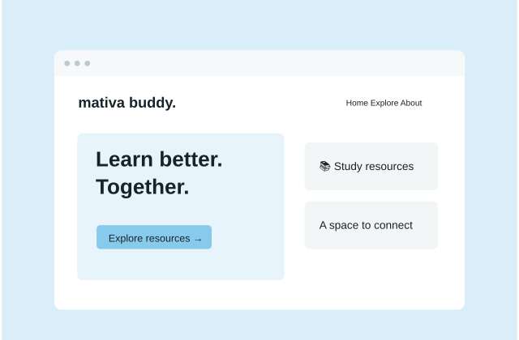
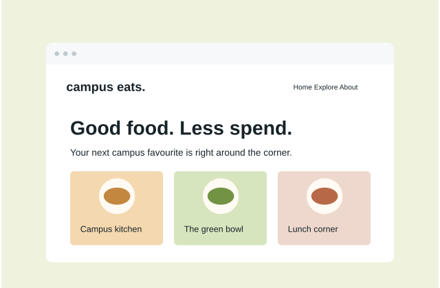
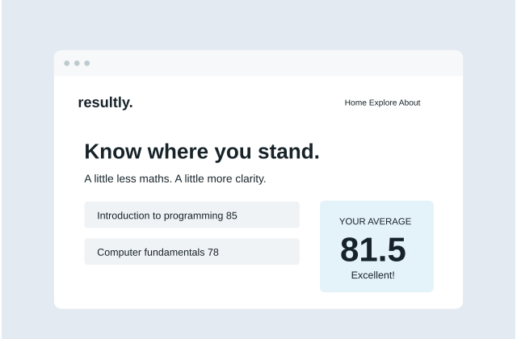

MativaBuddy Website
A little community. A lot of shared knowledge. A student space for study resources and support.
Curious mind. Creative spirit. Future engineer.
I’m learning to turn ideas into thoughtful digital experiences, one line of code at a time.

Always a student.
Even when I’m building.

A little community. A lot of shared knowledge. A student space for study resources and support.

Good food, student budgets. Discover affordable places to eat around campus.

Less number crunching, more clarity. Calculate grades and average scores in seconds.
I’m Adaora, a software engineering student with a love for web development, problem solving, and creating things that make everyday life a little easier.
Get to know meA soft piano loop for your next study session.